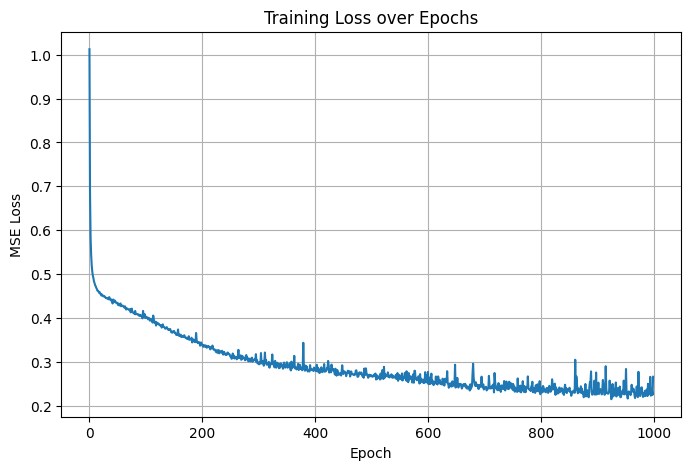
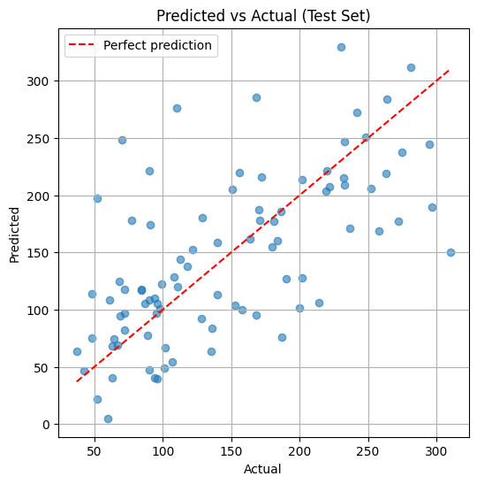

Laboratory Task 4
Instruction: Train a linear regression model in PyTorch using a regression dataset. Use the following parameters.
- Criterion: MSE Loss
- Fully Connected Layers x 2
- Batch Size: 8
- Optimizer: SGD
- Epoch: 1000
Dataset#
This uses the Diabetes dataset from sklearn.datasets — a standard, built-in regression
dataset with 10 numeric input features (age, BMI, blood pressure, etc.) and a continuous target
(a quantitative measure of disease progression). It’s a common choice for regression demos since
it’s small, real, and doesn’t require downloading anything.
Model#
Since the task calls for 2 fully connected layers, the model is a small feed-forward network:
A ReLU activation sits between the two layers so they aren’t mathematically equivalent to a single linear layer — otherwise stacking two linear layers with nothing in between would just collapse into one linear transform.
import numpy as np
import torch
import torch.nn as nn
from torch.utils.data import TensorDataset, DataLoader
from sklearn.datasets import load_diabetes
from sklearn.model_selection import train_test_split
from sklearn.preprocessing import StandardScaler
import matplotlib.pyplot as plt
torch.manual_seed(42)
np.random.seed(42)
# --- Load the regression dataset ---
data = load_diabetes()
X, y = data.data, data.target.reshape(-1, 1)
print("X shape:", X.shape)
print("y shape:", y.shape)
X shape: (442, 10)
y shape: (442, 1)
Preprocessing#
Split into train/test sets, then standardize (zero mean, unit variance) both the features and the target. Standardizing the target matters here too — SGD with a small learning rate converges much more reliably on a scaled target than on the raw values (which range roughly 25–346).
X_train, X_test, y_train, y_test = train_test_split(
X, y, test_size=0.2, random_state=42
)
x_scaler = StandardScaler()
X_train = x_scaler.fit_transform(X_train)
X_test = x_scaler.transform(X_test)
y_scaler = StandardScaler()
y_train = y_scaler.fit_transform(y_train)
y_test = y_scaler.transform(y_test)
# Convert to tensors
X_train_t = torch.tensor(X_train, dtype=torch.float32)
y_train_t = torch.tensor(y_train, dtype=torch.float32)
X_test_t = torch.tensor(X_test, dtype=torch.float32)
y_test_t = torch.tensor(y_test, dtype=torch.float32)
print("Train size:", X_train_t.shape[0], " Test size:", X_test_t.shape[0])
Train size: 353 Test size: 89
# --- DataLoader with batch size 8 ---
train_dataset = TensorDataset(X_train_t, y_train_t)
train_loader = DataLoader(train_dataset, batch_size=8, shuffle=True)
print("Number of batches per epoch:", len(train_loader))
Number of batches per epoch: 45
Model Definition#
class LinearRegressionModel(nn.Module):
def __init__(self, input_dim, hidden_dim=16):
super().__init__()
self.fc1 = nn.Linear(input_dim, hidden_dim)
self.relu = nn.ReLU()
self.fc2 = nn.Linear(hidden_dim, 1)
def forward(self, x):
x = self.fc1(x)
x = self.relu(x)
x = self.fc2(x)
return x
model = LinearRegressionModel(input_dim=X_train_t.shape[1])
print(model)
LinearRegressionModel(
(fc1): Linear(in_features=10, out_features=16, bias=True)
(relu): ReLU()
(fc2): Linear(in_features=16, out_features=1, bias=True)
)
Loss Function & Optimizer#
criterion = nn.MSELoss()
optimizer = torch.optim.SGD(model.parameters(), lr=0.01)
Training Loop (1000 Epochs)#
epochs = 1000
loss_history = []
for epoch in range(epochs):
epoch_loss = 0.0
for batch_X, batch_y in train_loader:
optimizer.zero_grad()
predictions = model(batch_X)
loss = criterion(predictions, batch_y)
loss.backward()
optimizer.step()
epoch_loss += loss.item() * batch_X.size(0)
epoch_loss /= len(train_dataset)
loss_history.append(epoch_loss)
if (epoch + 1) % 100 == 0:
print(f"Epoch [{epoch+1}/{epochs}] - Loss: {epoch_loss:.4f}")
Epoch [100/1000] - Loss: 0.4000
Epoch [200/1000] - Loss: 0.3400
Epoch [300/1000] - Loss: 0.2959
Epoch [400/1000] - Loss: 0.2837
Epoch [500/1000] - Loss: 0.2699
Epoch [600/1000] - Loss: 0.2548
Epoch [700/1000] - Loss: 0.2371
Epoch [800/1000] - Loss: 0.2264
Epoch [900/1000] - Loss: 0.2257
Epoch [1000/1000] - Loss: 0.2661
Training Loss Curve#
plt.figure(figsize=(8, 5))
plt.plot(loss_history)
plt.xlabel("Epoch")
plt.ylabel("MSE Loss")
plt.title("Training Loss over Epochs")
plt.grid(True)
plt.show()

Evaluation on Test Set#
model.eval()
with torch.no_grad():
test_predictions = model(X_test_t)
test_loss = criterion(test_predictions, y_test_t)
print(f"Test MSE Loss (scaled target): {test_loss.item():.4f}")
# Convert predictions back to the original target scale for interpretability
test_predictions_original = y_scaler.inverse_transform(test_predictions.numpy())
y_test_original = y_scaler.inverse_transform(y_test_t.numpy())
mse_original = np.mean((test_predictions_original - y_test_original) ** 2)
rmse_original = np.sqrt(mse_original)
print(f"Test MSE (original scale): {mse_original:.2f}")
print(f"Test RMSE (original scale): {rmse_original:.2f}")
Test MSE Loss (scaled target): 0.6049
Test MSE (original scale): 3675.69
Test RMSE (original scale): 60.63
plt.figure(figsize=(6, 6))
plt.scatter(y_test_original, test_predictions_original, alpha=0.6)
plt.plot(
[y_test_original.min(), y_test_original.max()],
[y_test_original.min(), y_test_original.max()],
"r--", label="Perfect prediction"
)
plt.xlabel("Actual")
plt.ylabel("Predicted")
plt.title("Predicted vs Actual (Test Set)")
plt.legend()
plt.grid(True)
plt.show()

Summary#
Model: 2 fully connected layers (10 → 16 hidden units → 1 output), with ReLU between them
Criterion: MSE Loss
Optimizer: SGD, learning rate 0.01
Batch size: 8
Epochs: 1000
The training loss curve above should decrease and flatten out over the 1000 epochs, and the predicted-vs-actual scatter plot shows how closely the model’s predictions track the true disease-progression scores on unseen test data — points near the red dashed line are accurate predictions.